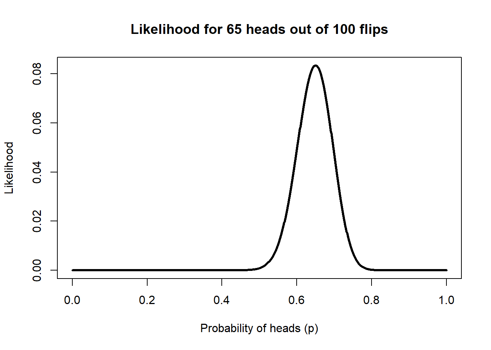
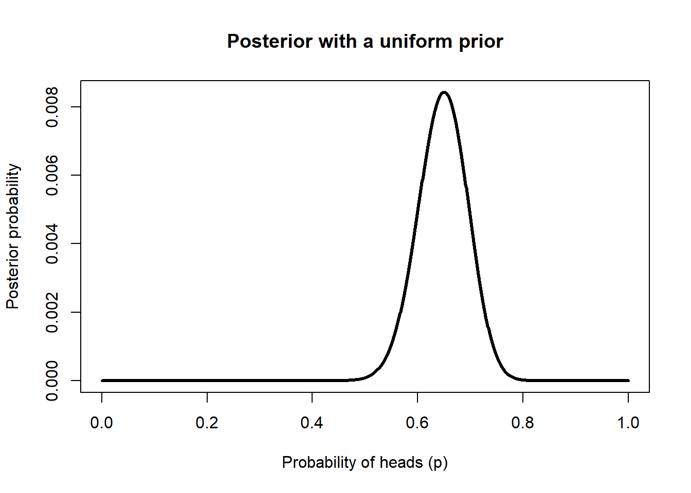
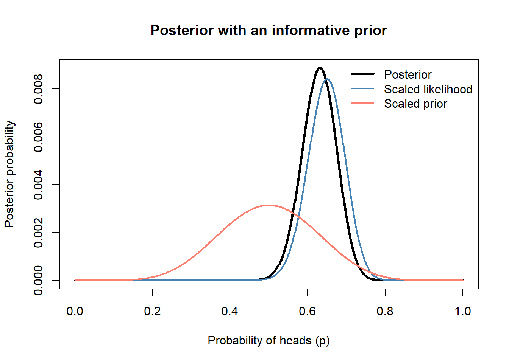
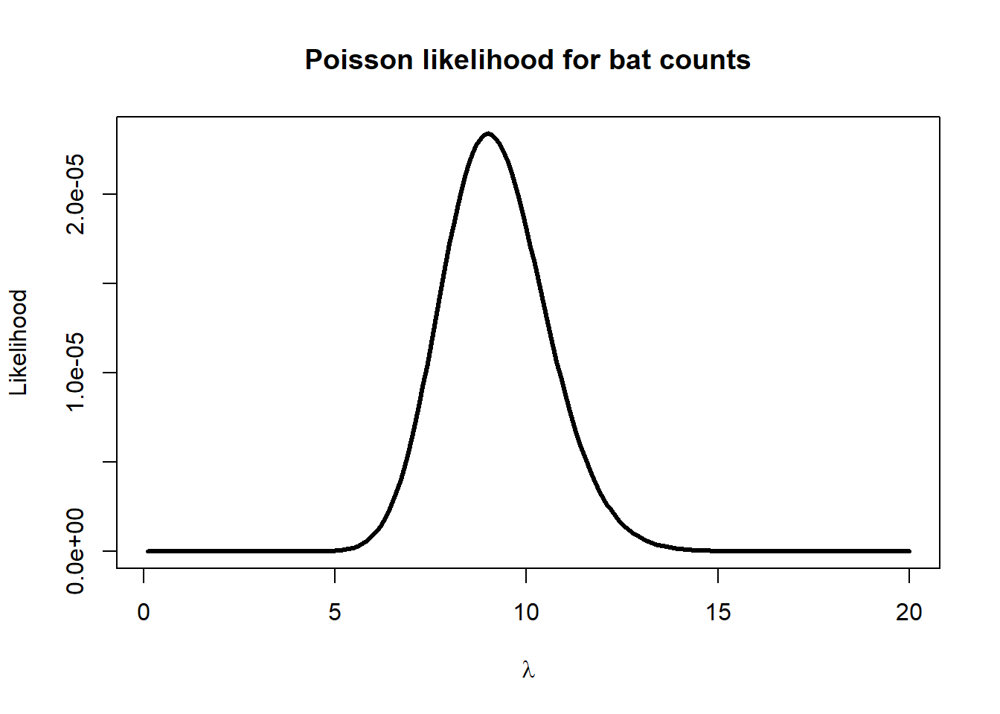

Bayesian statistics gives us a different way to think about uncertainty. In this framework, we combine what the data say, through the likelihood, with what we already know, through the prior. The result is a posterior distribution, which represents our updated belief about the parameter.
In this chapter we will keep things simple and work with likelihood-based Bayesian analysis in R. The goal is to understand the logic, build posterior distributions directly, and interpret them. We will not use specialized MCMC software. Instead, we will rely on grid-based calculations and functions that are already available in base R and standard packages.
11.1 Probability, likelihood, and Bayes’ theorem
Recall the distinction between probability and likelihood.
In probability, we usually ask: if the parameter is known, what data should we expect?
In likelihood, we ask: given the data we observed, what parameter values are more plausible?
The proportional sign is important. In practice, we often calculate the posterior up to a constant and then scale it so that it sums to 1.
11.2 A binomial example: an unfair coin
Suppose you flip a coin 100 times and observe 65 heads. We do not know the true probability of heads, so we will evaluate many possible values of \(p\) and ask which ones are most consistent with the data.
First, create a grid of possible parameter values and estimate the likelihood.
p_grid <-seq(0, 1, by =0.001)likelihood <-dbinom(65, size =100, prob = p_grid)plot(p_grid, likelihood, type ="l", lwd =3,xlab ="Probability of heads (p)",ylab ="Likelihood",main ="Likelihood for 65 heads out of 100 flips")

The peak of the curve corresponds to the value of \(p\) that maximizes the likelihood. In this case, it should be close to 0.65.
p_grid[which.max(likelihood)]
[1] 0.65
That value is the maximum likelihood estimate.
11.3 Adding a prior
Now we add a prior. We will start with a uniform prior, which gives every value of \(p\) between 0 and 1 the same weight.
prior_uniform <-rep(1, length(p_grid))joint_uniform <- likelihood * prior_uniformposterior_uniform <- joint_uniform /sum(joint_uniform)plot(p_grid, posterior_uniform, type ="l", lwd =3,xlab ="Probability of heads (p)",ylab ="Posterior probability",main ="Posterior with a uniform prior")

With a uniform prior, the posterior is driven almost entirely by the data. This is common when we have a lot of information in the sample.
11.4 A more informative prior
Suppose now that previous experience suggests the coin is usually close to fair. A Beta distribution is a convenient prior for a binomial probability, so we can use one that places more weight near 0.5.
prior_beta <-dbeta(p_grid, shape1 =8, shape2 =8)joint_beta <- likelihood * prior_betaposterior_beta <- joint_beta /sum(joint_beta)plot(p_grid, posterior_beta, type ="l", lwd =3,xlab ="Probability of heads (p)",ylab ="Posterior probability",main ="Posterior with an informative prior")lines(p_grid, likelihood /sum(likelihood), col ="steelblue", lwd =2)lines(p_grid, prior_beta /sum(prior_beta), col ="salmon", lwd =2)legend("topright",legend =c("Posterior", "Scaled likelihood", "Scaled prior"),col =c("black", "steelblue", "salmon"),lwd =c(3, 2, 2), bty ="n")

The prior pulls the posterior a bit toward 0.5, but the data still carry a lot of weight because we observed 100 flips.
11.5 Summarizing the posterior
A posterior distribution gives us more than a single estimate. We can summarize it in multiple ways.
The posterior mean is one summary of the distribution. The posterior mode is the most probable value in the grid. The credible interval gives a range of values that contains 95% of the posterior probability.
Note
A 95% credible interval is interpreted directly in terms of the parameter. Given the model, the prior, and the data, there is 95% posterior probability that the parameter lies in that interval.
11.6 A Poisson example: bats per net
Now let us use an example that is more similar to natural resources data. Suppose you sample bats with mist nets and observe the following counts:
bats <-c(8, 9, 11, 7, 10)bats
[1] 8 9 11 7 10
We want to estimate the expected number of bats per net, \(\lambda\). The Poisson likelihood is appropriate for count data when the mean count is the key parameter.
We will evaluate a range of possible values of \(\lambda\) and build the likelihood directly.
lambda_grid <-seq(0.1, 20, by =0.1)poisson_likelihood <-sapply(lambda_grid, function(lam) {prod(dpois(bats, lambda = lam))})plot(lambda_grid, poisson_likelihood, type ="l", lwd =3,xlab =expression(lambda),ylab ="Likelihood",main ="Poisson likelihood for bat counts")

In the slides we discussed using prior information from earlier surveys. Suppose earlier work suggests a mean near 10 bats per net, with a standard deviation near 3. A Gamma prior works well for a Poisson mean.
This plot is useful because it shows all three ingredients. The likelihood tells us what the data support. The prior represents previous information. The posterior combines both.
11.7 Comparing a posterior mode with a maximum likelihood estimate
We can also estimate the maximum likelihood value directly using optimization. This is still likelihood-based, and it helps connect Bayesian and frequentist thinking.
The first value is the maximum likelihood estimate. The second is the posterior mode from our Bayesian analysis. They are related, but they are not guaranteed to be the same because the posterior also includes the prior.
11.8 Interpretation
A Bayesian analysis is useful because it gives us a full distribution for the parameter, not just one estimate.
For the bat example, you could report:
the posterior mean, as a summary estimate
the posterior mode, as the most probable value on the grid
If the posterior is narrow, the data and prior together are providing a fairly precise estimate. If the posterior is wide, uncertainty remains high.
11.9 Final thoughts
The key ideas from this chapter are the following:
Likelihood tells us which parameter values are more consistent with the data.
Priors let us incorporate earlier information in a transparent way.
The posterior distribution combines both sources of information.
We can do useful Bayesian work in R without specialized MCMC software.
Grid-based approaches are especially helpful for learning because you can see each step of the analysis.
As models become more complex, grid-based methods become harder to use because the parameter space grows quickly. Even so, the underlying logic remains the same: posterior equals likelihood times prior, scaled so that it represents a probability distribution.